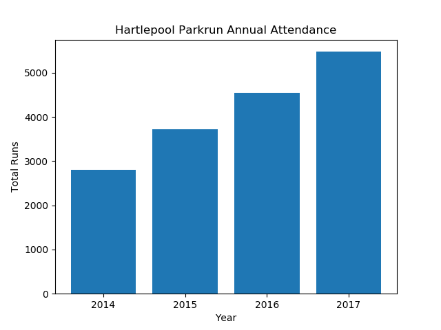
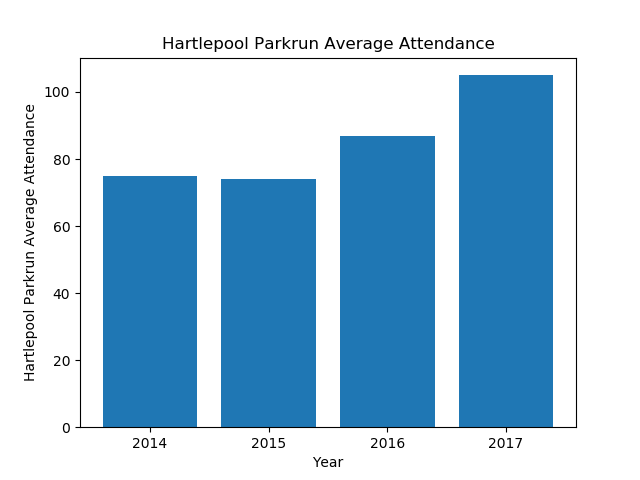
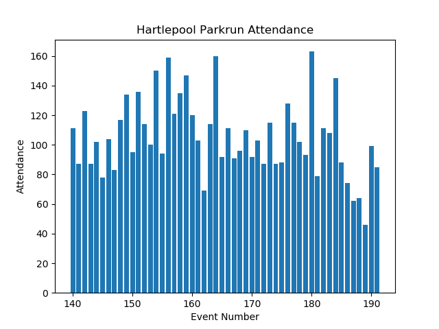
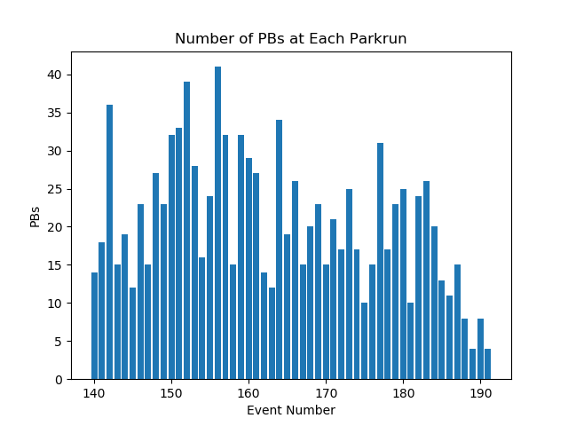
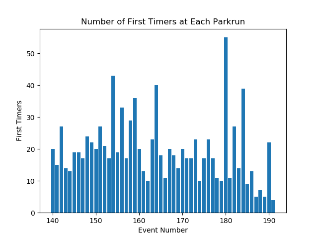

Annual Summary for Hartlepool-Rossmere Parkrun
Annual Attendance
| Year | Number of Events | Average Attendance | Number of Runs | Number of Volunteers | Number of PBs | Number of First Timers |
|---|
| 2014 | 37 | 75 | 2806 | 443 | 722 | 933 |
| 2015 | 50 | 74 | 3723 | 538 | 809 | 666 |
| 2016 | 52 | 87 | 4548 | 561 | 843 | 785 |
| 2017 | 52 | 105 | 5477 | 556 | 1072 | 1015 |


Statistics for Events between 01/01/2017 and 31/12/2017
Max Attendance = 163, Min Attendance = 46



Top Participants
Top Volunteers
Total number of volunteering events
| Name | Number of Runs | Number of Volunteers |
|---|
| 1 | Heidi MORRISON | 4 | 54 |
| 2 | Steven MORRISON | 24 | 47 |
| 3 | David NOBLE | 3 | 45 |
| 4 | Bryan LANGSTON | 0 | 39 |
| 5 | Michael WALLER | 0 | 39 |
| 6 | Roy WATKINS | 8 | 38 |
| 7 | Carl MARCHANT | 2 | 37 |
| 8 | Ann SMITH | 5 | 35 |
| 9 | Audrey STREETING | 4 | 35 |
| 10 | Janis NOBLE | 1 | 29 |
| 11 | Christopher WINDRAM | 0 | 28 |
Most Runs
Total Number of Runs in the period
| Name | Number of Runs | Number of Volunteers |
|---|
| 1 | Alexander ORGAN | 64 | 0 |
| 2 | Alison EATON | 41 | 8 |
| 3 | Emilie- Jaye NOBLE | 38 | 0 |
| 4 | Joanne WILLIS | 38 | 0 |
| 5 | Caroline HARKIN | 33 | 4 |
| 6 | James PARKER | 33 | 13 |
| 7 | Robert MAYES | 33 | 0 |
| 8 | Terry ORGAN | 33 | 0 |
| 9 | Sarah NORMAN | 32 | 5 |
| 10 | James WINDRAM | 31 | 0 |
Time on Feet
Total time spent running in the period.
| Name | Time on Feet (hours) |
|---|
| 1 | Alexander ORGAN | 21.5 |
| 2 | Alison EATON | 20.7 |
| 3 | Joanne WILLIS | 19.1 |
| 4 | Terry ORGAN | 17.6 |
| 5 | Caroline HARKIN | 17.6 |
| 6 | Gill LAMB | 16.8 |
| 7 | Jane WATT | 16.1 |
| 8 | Julia WALLER | 15.6 |
| 9 | Phil HOLBROOK | 14.5 |
| 10 | Sarah NORMAN | 14.5 |
Keenest
Total Participation (run + volunteer). Note: Running and volunteering on the same day counts.
| Name | Number of Runs | Number of Volunteers | Total |
|---|
| 1 | Steven MORRISON | 24 | 47 | 71 |
| 2 | Alexander ORGAN | 64 | 0 | 64 |
| 3 | Heidi MORRISON | 4 | 54 | 58 |
| 4 | Alison EATON | 41 | 8 | 49 |
| 5 | David NOBLE | 3 | 45 | 48 |
| 6 | James PARKER | 33 | 13 | 46 |
| 7 | Roy WATKINS | 8 | 38 | 46 |
| 8 | Julia WALLER | 29 | 14 | 43 |
| 9 | Ann SMITH | 5 | 35 | 40 |
| 10 | Audrey STREETING | 4 | 35 | 39 |
Consistency
Smallest variation (standard deviation) in run times.
| Name | Run Time SD (sec) | Number of Runs |
|---|
| 1 | Jonathan FOSTER | 16.3 | 11 |
| 2 | Callum CHAPMAN | 17.3 | 11 |
| 3 | Richard BUNTER | 17.7 | 10 |
| 4 | Jonathan GOWLER | 19.2 | 12 |
| 5 | Paul ELSLEY | 20.6 | 15 |
| 6 | Mick LEWIS | 21.7 | 10 |
| 7 | Katy LOCKEY | 21.8 | 11 |
| 8 | Nathan NICHOLSON | 23.3 | 10 |
| 9 | Lee KITCHING | 23.7 | 17 |
| 10 | Steven MORRISON | 23.8 | 24 |